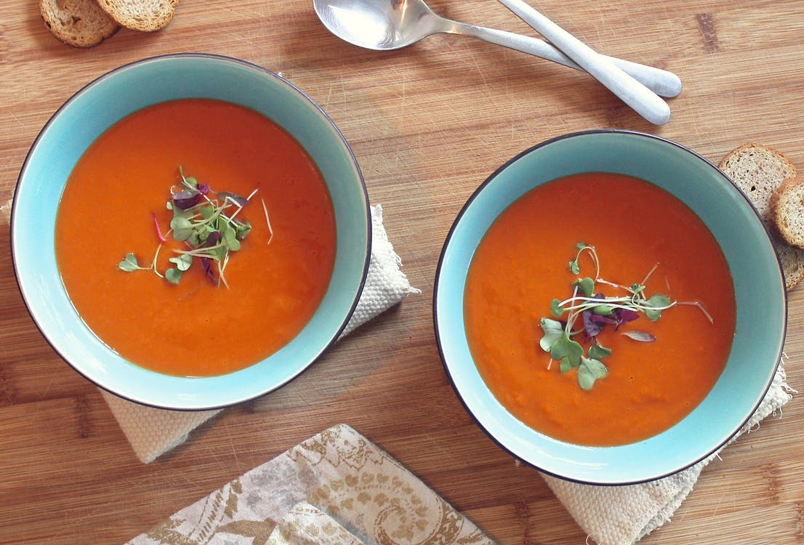

Tomato Soup

Fresh Tomato Soup
Tomato soup, made with red tomatoes. Creamy, fresh, and ready in 35 minutes.
Ingredients
- 4 cups of chopped fresh tomatoes
- 1 slice onion
- 4 whole cloves
- 2 cups chicken broth
- 2 tablesppons butter
- 2 tablespoons all-purpose flour
- 1 teaspoon salt
- 2 teaspoons white sugar, or to taste
Steps
- Combine the tomatoes, onion, cloves, and chicken broth in a stackpot over medium heat.
- Gently boil for about 20 minutes.
-
Remove from heat, run mixture through a food mill into a
large bowl. Discard leftover stuff in food mill.
- Melt butter in an empty stockpot over medium heat.
- Add flour to make a roux.
- Cook roux until it is medium brown.
- Slowly add a bits of the tomato mixture, ensuring no lumps are formed.
- Stir, season with brown sugar and salt.